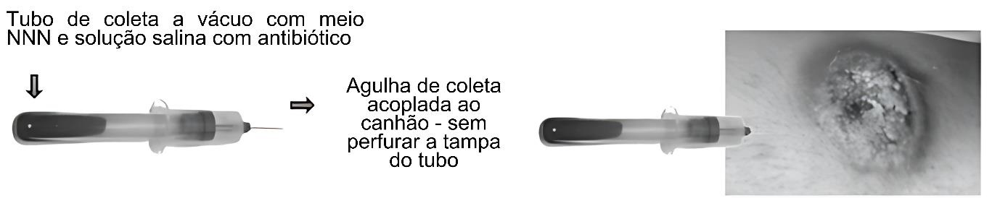

Aula 2
Diagnóstico laboratorial da leishmaniose tegumentar
Após entender como a doença se manifesta no organismo, é fundamental
saber como diagnosticá-la corretamente. Iniciamos com a leishmaniose
tegumentar, uma forma que atinge pele e mucosas e apresenta desafios
particulares para o diagnóstico. Vamos explorar os métodos
laboratoriais disponíveis — como a visualização direta do parasito,
testes moleculares e sorológicos —, suas vantagens, limitações e
indicações específicas. Esta aula nos mostra como o conhecimento
clínico e laboratorial se entrelaçam na abordagem do paciente.
add
Pense sobre...
Você conhece a estrutura básica de uma célula?

Figura 20. Representação esquemática de uma
célula eucariótica, destacando suas principais estruturas:
núcleo (contendo o material genético) e nucléolo (responsável
pela produção de ribossomos); ribossomos (síntese de
proteínas); retículo endoplasmático (rugoso e liso, para
síntese e transporte de proteínas e lipídios); complexo de
Golgi (processamento e distribuição de moléculas);
mitocôndrias (produção de energia); lisossomos (digestão
intracelular); vacúolo (armazenamento de substâncias);
centrossomo (organização dos microtúbulos e participação na
divisão celular); membrana plasmática (delimitação e controle
de trocas com o ambiente); citoplasma (matriz que abriga os
organelas); e citoesqueleto (suporte estrutural e movimentação
celular).
add
Pense sobre...
Mas como essa coloração é realizada?
Figura 21. Esquema representativo da
morfologia de uma amastigota, forma intracelular de parasitos
do gênero Leishmania. Destaca o núcleo, o cinetoplasto
(estrutura mitocondrial com DNA circular), a membrana
plasmática (delimitando a célula), e o flagelo residual não
externo, característico desta forma evolutiva. A amastigota é
adaptada para sobrevivência no interior de macrófagos do
hospedeiro mamífero. Fonte:SmartServier licenciada CC-BY-4.0.

Figura 22. Procedimento de “imprinting”:
demonstração do fragmento de tecido, direção e sentido do
corte, fragmentos resultantes, forma correta de pinçar o
fragmento, técnica para realizar os carimbos e a disposição
final dos carimbos na lâmina. Este material é disponibilizado
como recurso educacional aberto, destinado a fins acadêmicos e
científicos. Fonte:os autores.
add
Pense sobre...
Você sabe o que é um meio de cultura?

Figura 23. Procedimento de coleta de amostra
clínica para diagnóstico de leishmaniose. Ilustração do uso de
um tubo de coleta a vácuo contendo meio NNN e solução salina
com antibiótico. A agulha de coleta é acoplada ao canhão sem
perfurar a tampa do tubo. A imagem à direita representa uma
lesão cutânea, possível local de coleta da amostra.

Figura 24. Demonstração prática do método
indireto para isolamento de Leishmania. Sequência das
etapas laboratoriais do procedimento de isolamento da
Leishmania, abrangendo coleta, processamento e cultivo
do material biológico. (a) Amostra biológica armazenada em
tubo. (b) Transferência da amostra para placa de Petri. (c)
Fragmentação do material com auxílio de bisturi. (d)
Manipulação do fragmento biológico com pinça. (e)
Transferência do fragmento para tubo de cultura. (f) Incubação
dos tubos com meio de cultivo. (g) Processamento adicional do
material biológico. (h) Preparação da lâmina para análise
microscópica. (i) Fixação da amostra na lâmina. (j) Observação
de formas parasitárias ao microscópio.Fonte:os autores.
.png)
.png)
 11.34.26_9e6c4519.jpg)